c5-s1 · حكايات الحارة · 4.4 ث دون تغيير

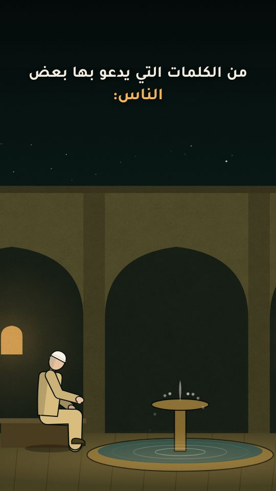
من الكلمات التي يدعو بها بعض الناس:
c5-s2 · النص الحركي · 3.5 ث دون تغيير
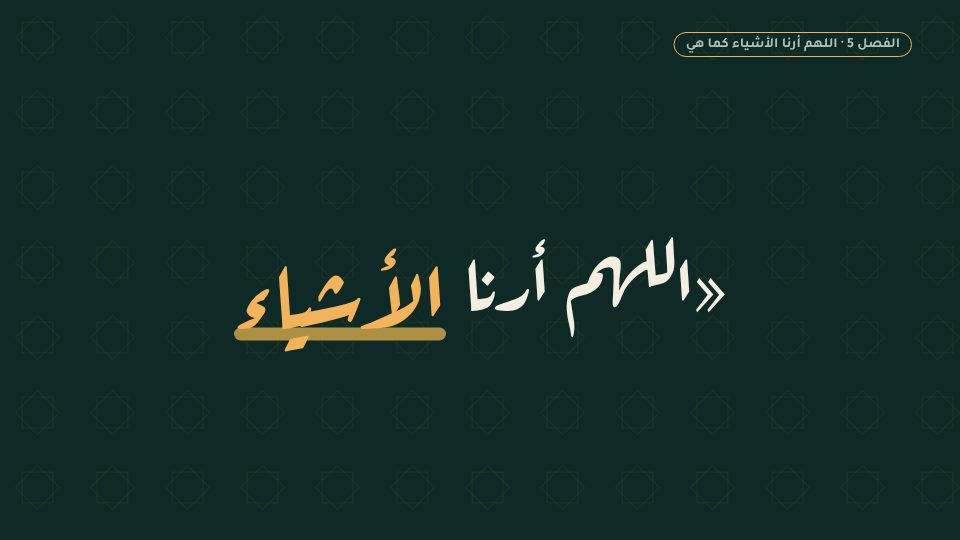
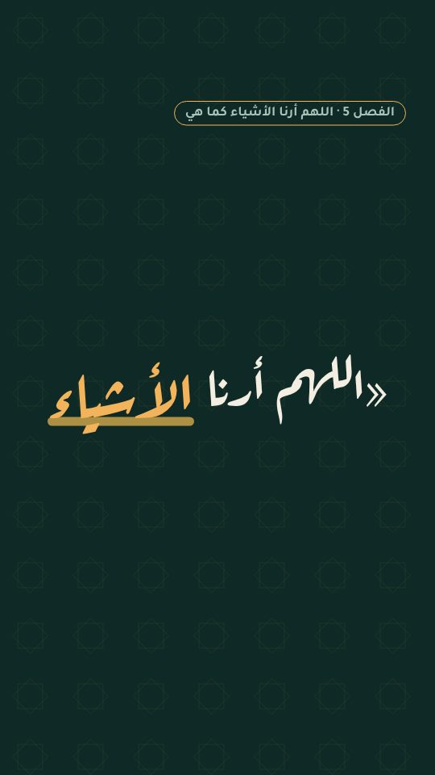
«اللهم أرنا الأشياء كما هي».
c5-s3 · حكايات الحارة · 8.6 ث دون تغيير


وهو دعاء حسن المعنى، نسأل الله فيه أن يرزقنا النظر الصحيح إلى أنفسنا وإلى ما حولنا.
c5-s4 · حكايات الحارة · 4 ث معدّل
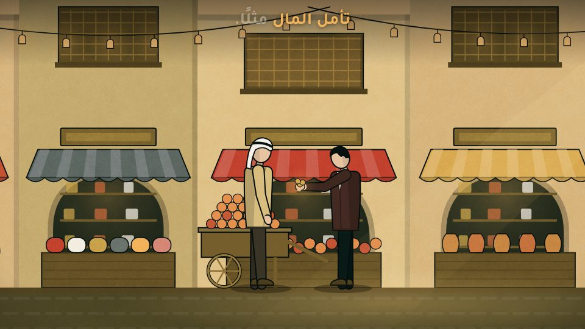
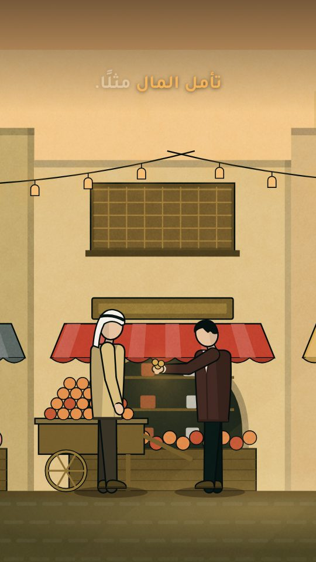
تأمل المال مثلًا.
c5-s5 · حكايات الحارة · 6.7 ث معدّل


هو نعمة من الله، ووسيلة لقضاء الحاجات، وقد يكون بابًا واسعًا للخير.
c5-s6 · حكايات الحارة · 6.7 ث دون تغيير
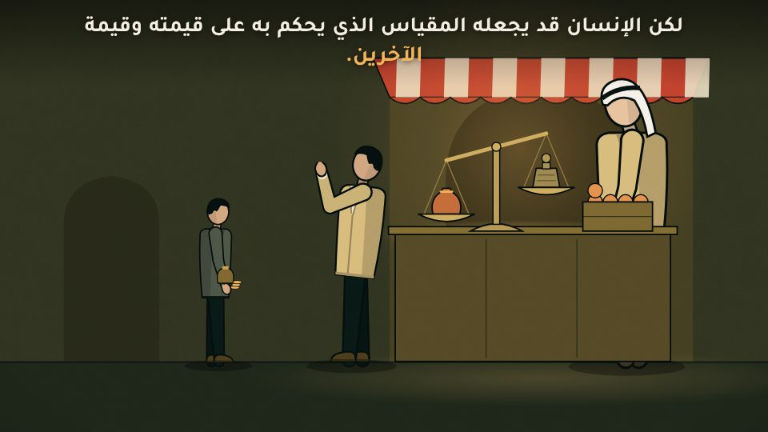

لكن الإنسان قد يجعله المقياس الذي يحكم به على قيمته وقيمة الآخرين.
c5-s7 · حكايات الحارة · 4 ث دون تغيير


وتأمل النجاح.
c5-s8 · حكايات الحارة · 8.6 ث دون تغيير


قد يكون ثمرة جهد وتوفيق من الله، لكنه قد يتحول في نفس صاحبه إلى سبب للغرور.
c5-s9 · حكايات الحارة · 4 ث دون تغيير

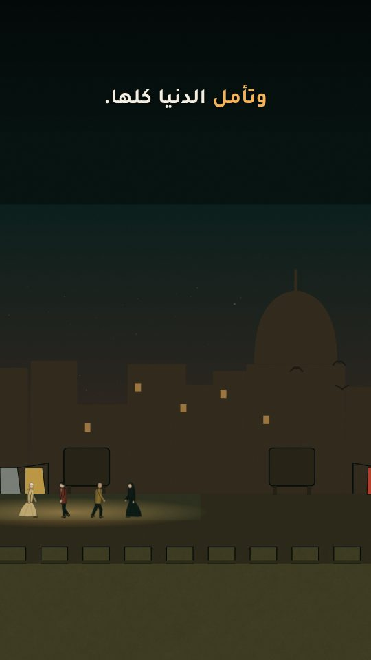
وتأمل الدنيا كلها.
c5-s10 · حكايات الحارة · 5.8 ث دون تغيير
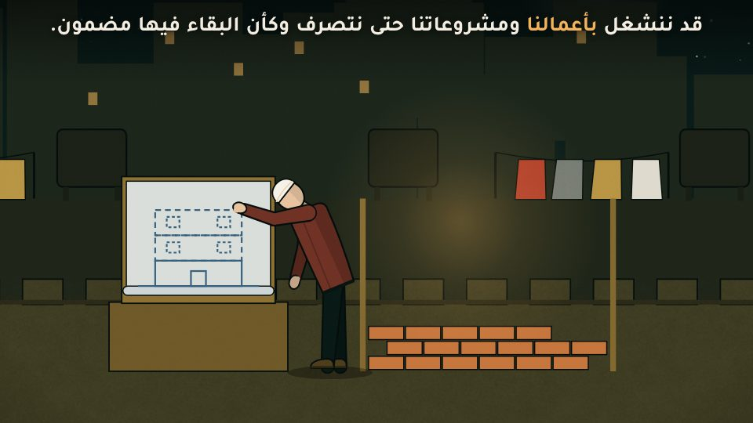
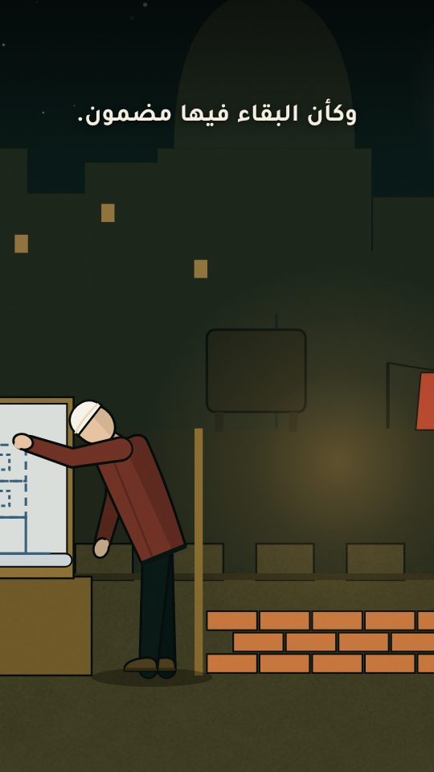
قد ننشغل بأعمالنا ومشروعاتنا حتى نتصرف وكأن البقاء فيها مضمون.
c5-s11 · حكايات الحارة · 4.4 ث دون تغيير


بينما يذكرنا القرآن بحقيقتها، فيقول الله تعالى:
c5-s12 · بطاقة الآية · 7 ث دون تغيير


—
c5-s13 · حكايات الحارة · 8.1 ث دون تغيير


ولا يعني هذا أن نترك العمل للدنيا، أو نهمل ما أباح الله لنا من طيباتها.
c5-s14 · حكايات الحارة · 4 ث دون تغيير
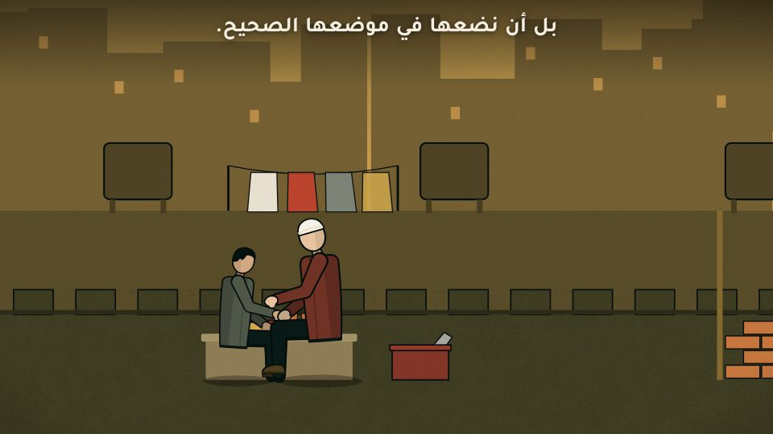

بل أن نضعها في موضعها الصحيح.
c5-s15 · حكايات الحارة · 4.9 ث دون تغيير


فهي دار عمل وابتلاء، وليست الغاية الأخيرة للإنسان.
c5-s16 · حكايات الحارة · 5.8 ث دون تغيير


والنظر الصحيح لا يتعلق بالأشياء وحدها، بل يتعلق أيضًا بأنفسنا.
c5-s17 · حكايات الحارة · 5.4 ث دون تغيير
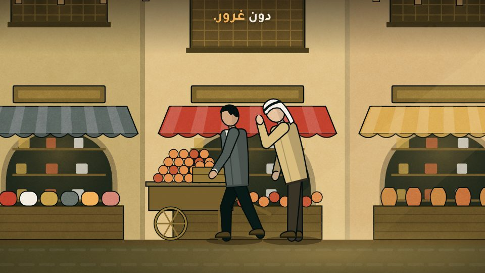
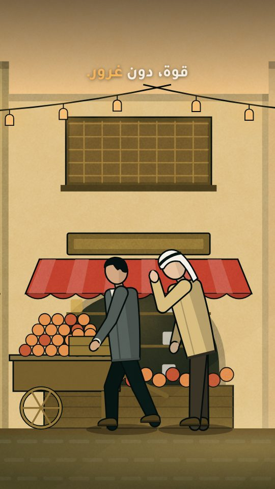
أن نعرف ما لدينا من مواطن قوة، دون غرور.
c5-s18 · حكايات الحارة · 4 ث دون تغيير

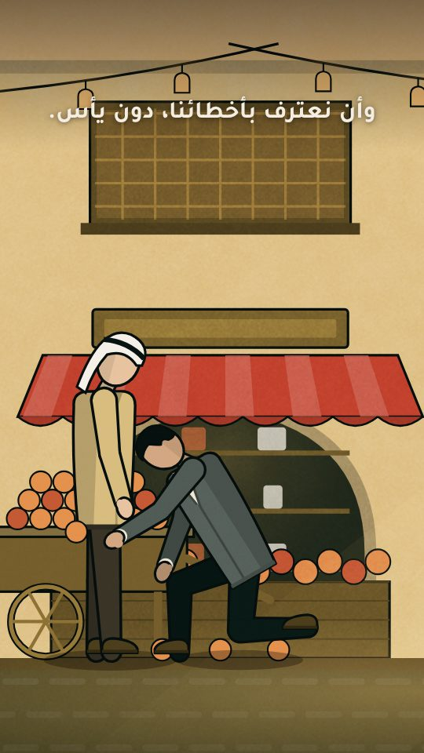
وأن نعترف بأخطائنا، دون يأس.
c5-s19 · حكايات الحارة · 9.5 ث معدّل

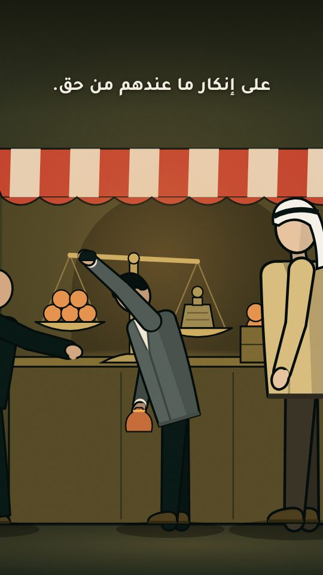
وأن ننصف الآخرين، فلا تمنعنا محبتهم من رؤية أخطائهم، ولا تحملنا كراهيتهم على إنكار ما عندهم من حق.
c5-s20 · حكايات الحارة · 14.1 ث معدّل


فالبصيرة ليست أن نرى ما نحب، بل أن نجتهد في رؤية الأشياء بميزان العدل والحق. ويبقى السؤال العملي: كيف ندرّب أنفسنا على هذه البصيرة في مواقف الحياة اليومية؟